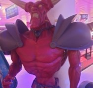

Een garage in Den Haag is waar het avontuur in 2008 begon met twee vrienden Hasan Tasdemir en Pascal Rappailles. Al snel werd de garage te klein en verhuisden ze naar een loods op een industrieterrein. Helaas is de schuur onverwarmd en moest midden in de winter alles verhuizen naar het leegstaande ministerie van Landbouw. Toen het gebouw ook moest worden schoongemaakt, werd een toenmalige verzameling van 10 arcade-videogames samen met enkele reserveonderdelen opgeslagen in een oude oldtimershowroom. Omdat er geen plek is om te decoreren en er geen plek is om de kasten vol te proppen, heb ik een geschikte plek gevonden.
1 / 5

Een race arcade kast
2 / 5

standbeeld van een video game Monster
3 / 5

een bureau met een computer van vroeger
4 / 5

Je kan allerlei spellen spelen op meerdere systemen
5 / 5

Je kan Bowlen op de Wii met een mooi groot scherm